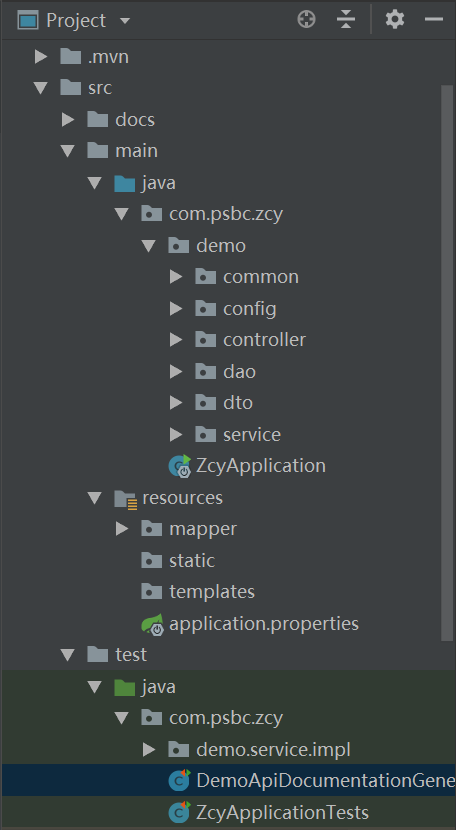

Swagger静态文档的生成
有些时候，我们可能只需要提供静态文档给其他对接方的时候，我们要如何快速轻便的产生静态API文档呢？接下来我们就来学习一个解决该问题的工具：Swagger2Markup。
1.Swagger2Markup简介
Swagger2Markup是Github上的一个开源项目。该项目主要用来将Swagger自动生成的文档转换成几种流行的格式以便于静态部署和使用，比如：AsciiDoc、Markdown、Confluence。项目主页：https://github.com/Swagger2Markup/swagger2markup
2.生成 AsciiDoc 文档
生成 AsciiDoc 文档的方式有两种：
- 通过Java代码来生成
- 通过 Maven 插件来生成
2.1通过Java代码来生成
第一步：编辑pom.xml增加需要使用的相关依赖和仓库
<!--添加swagger2markup依赖用于生成静态api文档-->
<dependency>
<groupId>io.github.swagger2markup</groupId>
<artifactId>swagger2markup</artifactId>
<version>1.3.3</version>
<scope>test</scope>
</dependency>
<!--end-->
<!--生成静态api文档所需的仓库-->
<repositories>
<repository>
<snapshots>
<enabled>false</enabled>
</snapshots>
<id>jcenter-releases</id>
<name>jcenter</name>
<url>http://jcenter.bintray.com</url>
</repository>
</repositories>
<!--end-->
本身这个工具主要就临时用一下，所以这里我们把scope设置为test，这样这个依赖就不会打包到正常运行环境中去。
第二步：编写一个单元测试用例来生成执行生成文档的代码
package com.psbc.zcy;
import io.github.swagger2markup.Swagger2MarkupConfig;
import io.github.swagger2markup.Swagger2MarkupConverter;
import io.github.swagger2markup.builder.Swagger2MarkupConfigBuilder;
import io.github.swagger2markup.markup.builder.MarkupLanguage;
import org.junit.Test;
import org.junit.runner.RunWith;
import org.springframework.boot.test.context.SpringBootTest;
import org.springframework.test.context.junit4.SpringRunner;
import java.net.URL;
import java.nio.file.Path;
import java.nio.file.Paths;
@RunWith(SpringRunner.class)
@SpringBootTest(webEnvironment = SpringBootTest.WebEnvironment.DEFINED_PORT)
public class DemoApiDocumentationGeneratorTests {
@Test
public void generateMarkdownDocs() throws Exception {
URL remoteSwaggerFile = new URL("http://localhost:8443/v2/api-docs");
Path outputDirectory = Paths.get("src/docs/markdown/generated");
// 输出MARKDOWN格式
Swagger2MarkupConfig config = new Swagger2MarkupConfigBuilder()
.withMarkupLanguage(MarkupLanguage.MARKDOWN)
.build();
Swagger2MarkupConverter.from(remoteSwaggerFile)
.withConfig(config)
.build()
.toFolder(outputDirectory);//生成到一个文件里面：toFile(outputDirectory)
}
}
以上代码内容很简单，大致说明几个关键内容：
- MarkupLanguage.ASCIIDOC：指定了要输出的最终格式。除了MARKDOWN之外，还有ASCIIDOC和CONFLUENCE_MARKUP，分别定义了其他格式，后面会具体举例。
- from(remoteSwaggerFile：指定了生成静态部署文档的源头配置，可以是这样的URL形式，也可以是符合Swagger规范的String类型或者从文件中读取的流。如果是对当前使用的Swagger项目，我们通过使用访问本地Swagger接口的方式，如果是从外部获取的Swagger文档配置文件，就可以通过字符串或读文件的方式
- toFolder(outputDirectory)：指定最终生成文件的具体目录位置
目录结构为：

第三步 在不启动主服务时直接执行上面的测试用例之后，我们就能在当前项目的src目录下获得如下内容：
src
--docs
----markdown
------generated
--------definitions.adoc
--------overview.adoc
--------paths.adoc
--------security.adoc
可以看到，这种方式在运行之后就生成出了4个不同的静态文件。
输出到单个文件
如果不想分割结果文件，也可以通过替换toFolder(outputDirectory)为toFile(outputDirectory)，将转换结果输出到一个单一的文件中，这样可以最终生成html的也是单一的。
2.2通过 Maven 插件来生成
除了通过上面编写Java代码来生成的方式之外，swagger2markup还提供了对应的Maven插件来使用。对于上面的生成方式，完全可以通过在pom.xml中增加如下插件来完成静态内容的生成。
第一步：生成ASCIIDOC
<!--完成静态api生成的插件（ASCIIDOC格式）-->
<plugin>
<groupId>io.github.swagger2markup</groupId>
<artifactId>swagger2markup-maven-plugin</artifactId>
<version>1.3.3</version>
<configuration>
<swaggerInput>http://localhost:8443/v2/api-docs</swaggerInput>
<outputDir>src/docs/asciidoc/generated-by-plugin</outputDir>
<config>
<swagger2markup.markupLanguage>ASCIIDOC</swagger2markup.markupLanguage>
</config>
</configuration>
</plugin>
<!--end-->
在使用插件生成前，需要先启动应用。然后执行插件，就可以在src/docs/asciidoc/generated-by-plugin目录下看到生成了adoc文件了。
第二步：生成HTML
在完成了从Swagger文档配置文件到AsciiDoc的源文件转换之后，就是如何将AsciiDoc转换成可部署的HTML内容了。这里继续在上面的工程基础上，引入一个Maven插件来完成。
<!--完成静态api生成的插件（html格式）-->
<plugin>
<groupId>org.asciidoctor</groupId>
<artifactId>asciidoctor-maven-plugin</artifactId>
<version>1.5.6</version>
<configuration>
<sourceDirectory>src/docs/asciidoc/generated-by-plugin</sourceDirectory>
<outputDirectory>src/docs/asciidoc/html</outputDirectory>
<backend>html</backend>
<sourceHighlighter>coderay</sourceHighlighter>
<attributes>
<toc>left</toc>
</attributes>
</configuration>
</plugin>
<!--end-->
通过上面的配置，执行该插件的asciidoctor:process-asciidoc命令之后，就能在src/docs/asciidoc/html目录下生成最终可用的静态部署HTML了。在完成生成之后，可以直接通过浏览器来看查看，你就能看到类似下图的静态部署结果：